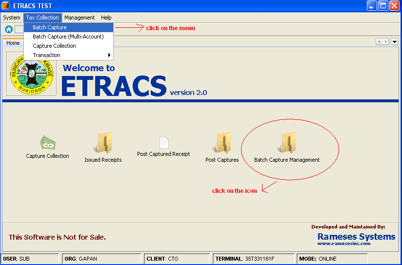
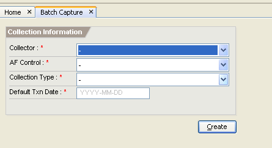
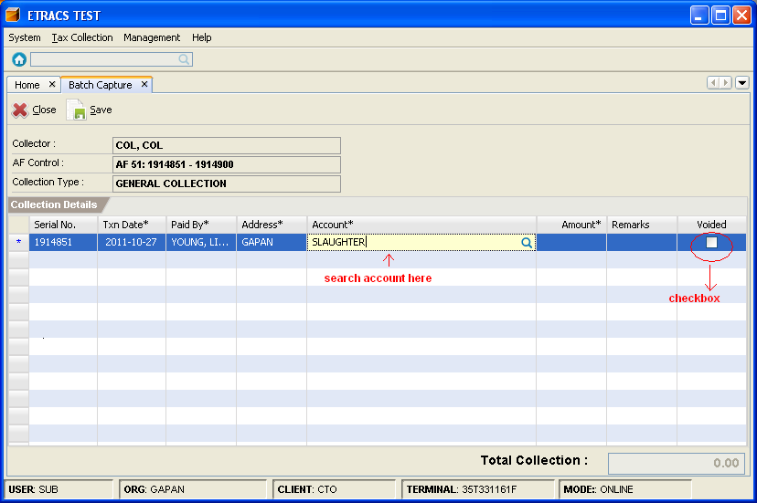
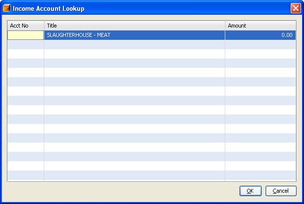
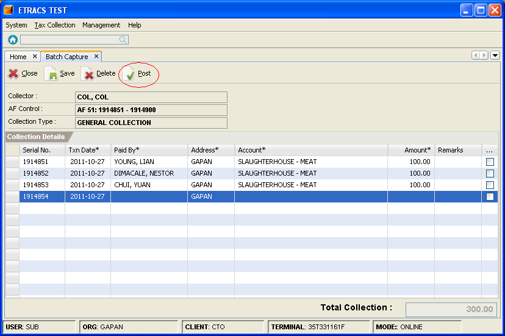
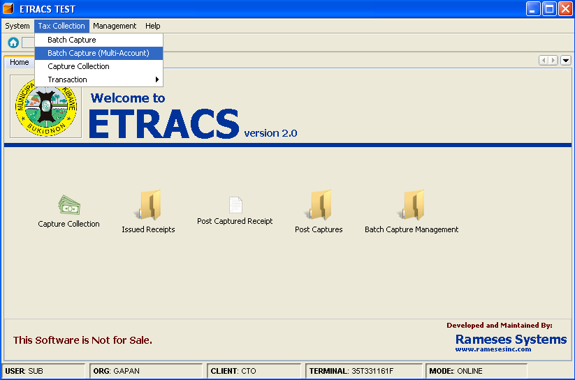
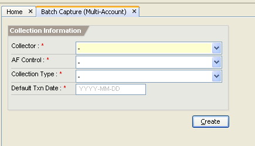
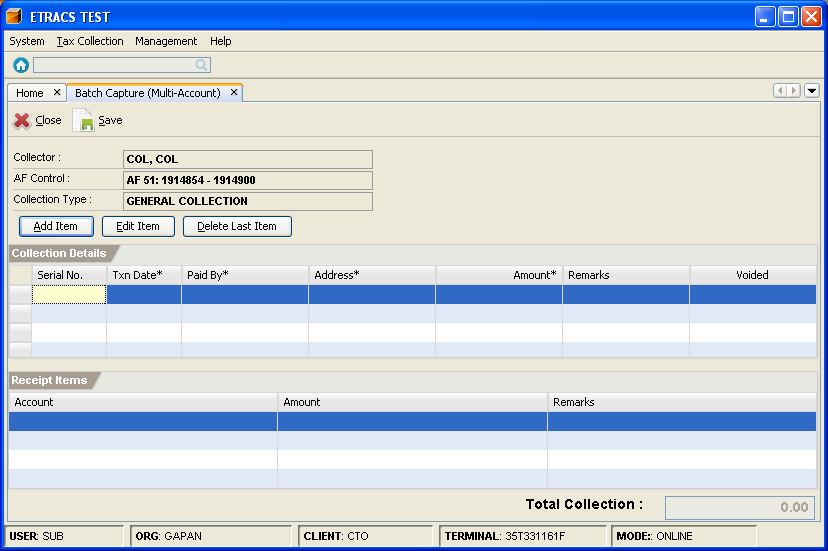
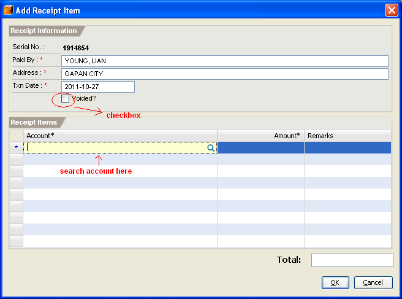

Batch Capture Collection
This facilities enable you to capture collections by batch. You can use batch capture with single account facility
or batch capture with multiple account facility to capture collections.
How to capture collections with single account?
1. On the menu toolbar, go to "Tax Collection -> Batch Capture" item.
You can also click on the "Batch Capture Management" icon from the home page, and click on
"New" button.

2. Specify the collection information.
- Collector - select a collector's name.
- AF Control - select an accountable form.
- Collection Type - select a collection type.
- Default Txn Date - specify the transaction date.

3. Click on the "Create" button or press [Alt+C].
4. Input the Txn Date, Paid By, Address, Account, amount, and remarks (optional) in the collection details table.
To search for the account, type atleast first three letters of the word, and press [Enter].
To cancel the receipt, double click on the checkbox under the voided column to mark it check.

5. Select an account, and click on the "OK" button or press [Enter].

6. To save the colletions, click on the "Save" button or press [Alt+S].
7. Click on the "Post" button or press [Alt+P] to post the saved collections.

How to capture collections with multiple accounts?
1. On the menu toolbar, go to "Tax Collection -> Batch Capture (Mutli-Account)" item.

2. Specify the collection information.
- Collector - select a collector's name.
- AF Control - select an accountable form.
- Collection Type - select a collection type.
- Default Txn Date - specify the transaction date.

3. Click on the "Create" button or press [Alt+C].
4. Click on the "Add Item" button or press [Enter].

5. Specify the Paid By, Address, Txn Date, and account.
To search for the account, type atleast first three letters of the word, and press [Enter].
To cancel the receipt, double click on the checkbox to mark it check.

6. Select an account, and click on the "OK" button or press [Enter].
7. Click on the "OK" button or press [Ctrl+Enter].
8. To save the colletions, click on the "Save" button or press [Alt+S].
9. Click on the "Post" button or press [Alt+P] to post the saved collections.